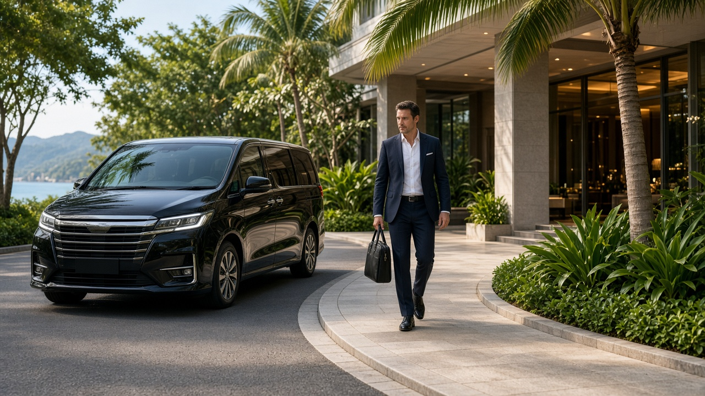

คู่มือรถตู้ภูเก็ต
รถตู้ภูเก็ตสำหรับทริปธุรกิจและรับแขกบริษัท
คู่มือรถตู้ภูเก็ตสำหรับทริปธุรกิจ รับแขกบริษัท ความตรงเวลา ความสะดวกสบาย และข้อมูลที่ควรแจ้งตอนจอง โดยไม่สร้างสิ่งอำนวยความสะดวกที่ไม่มีจริง
25 กันยายน 2026

Infinity Transport Phuket — รถตู้ภูเก็ตสำหรับทริปธุรกิจและรับแขกบริษัท ทริปธุรกิจในภูเก็ต ไม่ว่าจะเป็นการรับแขกจากสนามบิน ไปประชุมที่โรงแรม หรือพาแขกบริษัทเที่ยวหลังงาน ล้วนต้องการ รถตู้ภูเก็ต ที่ตรงเวลา สื่อสารชัด และเหมาะกับจำนวนคนและสัมภาระ ความผิดพลาดเล็กน้อย เช่น มาช้า หรือรถไม่พอดีกับกลุ่ม อาจส่งผลต่อความประทับใจของแขกได้
บทความนี้โฟกัสการใช้ เช่ารถตู้ภูเก็ตพร้อมคนขับ สำหรับทริปธุรกิจและรับแขกบริษัท ตั้งแต่การเน้นความตรงเวลา การเลือกรุ่นรถที่เหมาะสม ข้อมูลที่ควรแจ้งตอนจอง ไปจนถึงเช็คลิสต์ก่อนวันเดินทาง โดยอ้างอิงรูปแบบบริการจริงของ Infinity Transport & Travel Phuket ไม่สร้างสิ่งอำนวยความสะดวก VIP ที่ไม่มีในเว็บไซต์ ไม่สร้างราคา รีวิว หรือเงื่อนไขที่ไม่มีจริง
คำตอบสั้นสำหรับ Featured Snippet:
ทริปธุรกิจด้วย รถตู้ภูเก็ต ควรแจ้งเวลานัดสำคัญ จุดรับ–ส่ง จำนวนผู้โดยสารและสัมภาระ รวมถึงชื่อป้ายรับแขก (ถ้ามี) ล่วงหน้า หากต้องการความสะดวกสบายระดับสูง ให้เลือกรุ่นรถที่เหมาะจาก หน้ารถทั้งหมด และยืนยันรายละเอียดกับทีมงาน โดยไม่อ้างสิ่งอำนวยความสะดวกที่ไม่ได้ระบุไว้
สารบัญ
1. ทำไมทริปธุรกิจต้องวางแผนรถต่างจากท่องเที่ยว
2. รับส่งแขกบริษัทและนัดหมายสำคัญ
3. ความตรงเวลาและการสื่อสารล่วงหน้า
4. ความสะดวกสบายสำหรับผู้บริหารและแขก
5. ข้อมูลที่ควรแจ้งตอนจองทริปธุรกิจ
6. ตัวอย่างแผนรับส่งธุรกิจ
7. เช็คลิสต์ก่อนวันเดินทาง
8. ทำไมลูกค้าจึงเลือก Infinity Transport & Travel Phuket
9. คำถามที่พบบ่อย
10. สรุปท้ายบทความ
11. ติดต่อเรา (CTA)
ทำไมทริปธุรกิจต้องวางแผนรถต่างจากท่องเที่ยว
ทริปท่องเที่ยวอาจยืดหยุ่นได้เมื่อแผนเปลี่ยน แต่ทริปธุรกิจมักผูกกับเวลานัด สถานที่ และความประทับใจของแขก การใช้ บริการรถตู้ภูเก็ต จึงต้องเน้นความชัดเจนและความน่าเชื่อถือมากกว่าแค่ “ไปให้ถึง”
ความแตกต่างหลักระหว่างทริปท่องเที่ยวและทริปธุรกิจ
หัวข้อ ทริปท่องเที่ยว ทริปธุรกิจ เวลา ยืดหยุ่นได้บ้าง มักผูกกับนัดสำคัญ จุดหมาย หลายจุด ปรับได้ มักชัดเจนและตรงเวลา ผู้โดยสาร ครอบครัว เพื่อน แขกบริษัท ผู้บริหาร ทีมงาน ความประทับใจ ส่วนตัว สะท้อนภาพลักษณ์องค์กร การสื่อสาร ไม่เป็นทางการ ต้องชัด มีผู้ประสาน
เคล็ดลับ: มอบหมายคนหนึ่งในองค์กรเป็นผู้ประสานหลักกับผู้ให้บริการรถ จะลดความสับสนเรื่องเวลาและจุดรับ
ดูภาพรวมบริการได้ที่ หน้าบริการ และ Landing รถตู้ภูเก็ต ข้อมูลท่องเที่ยวภูเก็ตอ้างอิงได้จาก การท่องเที่ยวแห่งประเทศไทย
รับส่งแขกบริษัทและนัดหมายสำคัญ
การรับแขกจากสนามบินหรือส่งกลับ เป็นจุดแรกที่แขกประเมินความเป็นมืออาชีพขององค์กร รถตู้ VIP ภูเก็ต ในที่นี้หมายถึงการเลือกรถที่เหมาะกับกลุ่มและโอกาส ไม่ใช่การอ้างสิ่งอำนวยความสะดวกที่ไม่ได้ระบุไว้ในเว็บไซต์
รูปแบบการรับส่งที่พบบ่อย
รูปแบบ เหมาะกับ สิ่งที่ควรยืนยัน รับจากสนามบิน แขกมาถึงภูเก็ต เวลาไฟลท์ ป้ายรับ จำนวนคน ส่งกลับสนามบิน แขกกลับ เวลาไฟลท์ ออกจากโรงแรมกี่โมง รับส่งโรงแรม–สถานที่ประชุม งานสัมมนา อบรม ที่อยู่และเวลานัด เหมาคันตลอดวัน หลายจุดในแผนเดียว ลำดับจุดและเวลา
ป้ายรับแขก (Meet & Greet)
หากต้องการให้คนขับถือป้ายรับแขก แจ้งข้อความบนป้าย (ชื่อบริษัทหรือชื่อแขก) ล่วงหน้า ข้อมูลสนามบินอ้างอิงได้ที่ เว็บไซต์ทางการของท่าอากาศยานภูเก็ต
คำคมจากทีมวางแผนทริป:
“การรับแขกที่สนามบินอย่างเป็นระบบ เริ่มจากข้อมูลที่ชัดตั้งแต่ตอนจอง ไม่ใช่การแก้ปัญหาหน้างาน”
อ่านแนวทางจองทั่วไปได้ที่ วิธีจองรถตู้ภูเก็ต
ความตรงเวลาและการสื่อสารล่วงหน้า
ความตรงเวลาเป็นหัวใจของทริปธุรกิจ การใช้ Phuket Van Service ที่สื่อสารรายละเอียดล่วงหน้า ช่วยลดความเสี่ยงที่แขกจะรอหรือพลาดนัด
หลักการเน้นความตรงเวลา
แจ้งเวลานัดสำคัญ ทุกจุด ไม่ใช่แค่จุดแรกเผื่อเวลาเดินทาง โดยเฉพาะช่วงเร่งด่วนหรือฝนตกยืนยันอีกครั้งก่อนวันเดินทาง โดยเฉพาะทริปที่จองล่วงหน้านานมีช่องทางติดต่อ ระหว่างวันเดินทาง หากแผนเปลี่ยนแจ้งหากแขกมาช้า จากสนามบิน เพื่อประสานกับคนขับ
ตารางเวลาที่ควรแจ้งล่วงหน้า
ประเภทนัด ข้อมูลที่ควรแจ้ง ไฟลท์ เลขเที่ยวบิน เวลาถึง/ออก จำนวนแขก ประชุม ที่อยู่ เวลาเริ่ม เวลาที่ควรถึง งานเลี้ยง ที่อยู่ เวลารับจากโรงแรม หลายจุด ลำดับจุดและเวลาแต่ละจุด
เคล็ดลับ: สำหรับไฟลท์ แนะนำให้ออกจากโรงแรมเร็วกว่าเวลาที่คิดไว้ โดยเฉพาะช่วงฝนหรือการจราจรหนา
เมื่อมีหลายแขกมาคนละไฟลท์
ทริปธุรกิจที่แขกมาคนละเวลา ต้องแยกแผนรับเป็นรายคนหรือรายกลุ่ม แจ้งเลขเที่ยวบินและจำนวนคนแต่ละเที่ยวให้ชัด หากต้องการรวมแขกที่มาถึงใกล้เคียงกันในรถคันเดียว ควรระบุช่วงเวลารอที่ยอมรับได้ เพื่อไม่ให้แขกที่มาถึงก่อนรอนานเกินไป
สถานการณ์ แนวทาง แขก 2 คน ไฟลท์ห่างกัน 1 ชม. อาจรับคนแรกแล้วรอ หรือแยก 2 เที่ยว แขก 6 คน ไฟลท์เดียวกัน รถคันเดียว พร้อมป้ายรับ แขกมาถึงก่อนเช็คอิน แจ้งโรงแรมและเวลาที่คาดว่าจะถึง
ความสะดวกสบายสำหรับผู้บริหารและแขก
เมื่อพูดถึงความสะดวกสบายสำหรับทริปธุรกิจ สิ่งที่สำคัญคือรถที่เหมาะกับจำนวนคน สัมภาระ และโอกาส ไม่ใช่การอ้างสิ่งอำนวยความสะดวกพิเศษที่ไม่ได้ระบุไว้
สิ่งที่ควรพิจารณาเมื่อเลือกรถ
เกณฑ์ คำอธิบาย จำนวนที่นั่ง เลือกรถที่คนนั่งสบาย ไม่แออัด สัมภาระ แขกธุรกิจมักมีกระเป๋าและอุปกรณ์ ระยะเวลา ทริปยาวควรมีที่นั่งและพื้นที่เพียงพอ รุ่นรถ ดูรายละเอียดที่ หน้ารถทั้งหมด
สิ่งที่ไม่ควรสมมติ
อย่าสมมติว่ามี Wi-Fi จอ TV หรือเครื่องดื่มบนรถ หากไม่ได้ยืนยันกับทีมงาน
อย่าสมมติว่า “VIP” หมายถึงสิ่งอำนวยความสะดวกเดียวกันทุกที่
ยืนยันรายละเอียดรถและบริการที่ หน้าติดต่อ ก่อนจอง
เคล็ดลับ: หากต้องการทริปเหมาคันที่เน้นความสะดวกสบาย อ่านแนวทางเพิ่มได้ที่ คู่มือรถตู้เหมา VIP ภูเก็ต และยืนยันรายละเอียดจริงกับทีมงาน
สถานการณ์ธุรกิจและการเลือกรถ
สถานการณ์ สิ่งที่ควรพิจารณา รับผู้บริหาร 2–3 คน ที่นั่งกว้าง สัมภาระพอดี ไม่แออัด ทีมงาน 8–10 คน จำนวนที่นั่งและพื้นที่ท้ายรถ งานเลี้ยงช่วงเย็น เวลารับจากโรงแรมและส่งกลับ ทริปหลายวัน แจ้งแผนแต่ละวันล่วงหน้า
รายละเอียดรูปแบบบริการและแนวทางราคาเบื้องต้นดูได้ที่ หน้าราคา โดยราคาจริงขึ้นกับรายละเอียดทริป ควรยืนยันกับทีมงานก่อนจอง
ข้อมูลที่ควรแจ้งตอนจองทริปธุรกิจ
ยิ่งแจ้งรายละเอียดครบ ทีมงานยิ่งจัดรถและเวลาได้ตรงความต้องการ โดยเฉพาะทริปที่มีหลายจุดหรือแขกหลายคน
รายการข้อมูลสำคัญ
วันที่และเวลาที่ต้องการใช้รถ
จุดรับและจุดส่งหลัก (พร้อมที่อยู่)
จุดแวะระหว่างทาง (ถ้ามี) พร้อมลำดับและเวลา
จำนวนผู้โดยสาร (แยกผู้ใหญ่/เด็กถ้ามี)
จำนวนกระเป๋าใบใหญ่ / ใบเล็ก
เลขเที่ยวบินและเวลา (ถ้ารับจากสนามบิน)
ข้อความป้ายรับแขก (ถ้าต้องการ)
ต้องการเหมาคันหรือรับส่งเที่ยวเดียว
ช่องทางติดต่อผู้ประสานหลัก
ความต้องการพิเศษที่ยืนยันได้ (เช่น รุ่นรถ)
ทำไมชื่อโรงแรมและสถานที่จึงสำคัญ
ภูเก็ตมีโรงแรมและสถานที่ประชุมกระจายหลายโซน การแจ้งชื่อและที่อยู่ชัดเจน ช่วยให้ทีมงานประเมินเวลาเดินทางและแนะนำเวลาออกจากที่พักได้เหมาะสม
เคล็ดลับ: ส่งแผนเป็นไทม์ไลน์ เช่น 14:00 รับจากสนามบิน → 15:00 ถึงโรงแรม → 18:00 ส่งงานเลี้ยง จะช่วยให้ทั้งสองฝ่ายเข้าใจตรงกัน
ตัวอย่างแผนรับส่งธุรกิจ
ตัวอย่างด้านล่างเป็นแนวทางวางแผน ไม่ใช่ตารางตายตัว ควรปรับตามนัดหมายและจำนวนแขกจริง
แผน A: รับแขกจากสนามบิน
เวลาโดยประมาณ กิจกรรม หมายเหตุ ตามเวลาไฟลท์ คนขับรอที่จุดนัดพร้อมป้าย แจ้งข้อความป้ายล่วงหน้า +30–45 นาที รับแขกและออกเดินทาง เผื่อเวลาเก็บสัมภาระ +45–90 นาที ถึงโรงแรม ขึ้นกับโซนและการจราจร
แผน B: วันประชุมหลายจุด (เหมาคัน)
เวลาโดยประมาณ กิจกรรม หมายเหตุ 08:00 รับจากโรงแรม 08:30–12:00 ส่งทีมไปสถานที่ประชุม 12:00–13:00 มื้อกลางวัน แจ้งจุดล่วงหน้า 13:30–17:00 จุดถัดไปหรือกลับโรงแรม 18:00 ส่งงานเลี้ยง (ถ้ามี)
แผน C: ส่งแขกกลับสนามบิน
เวลาโดยประมาณ กิจกรรม หมายเหตุ ตามเวลาไฟลท์ ออกจากโรงแรม ออกเร็วกว่าเวลาที่คิดไว้ +45–90 นาที ถึงสนามบิน แจ้งเวลาไฟลท์ให้ทีมงานประเมิน
คำคม:
“แผนธุรกิจที่ดีไม่ใช่แผนที่แน่นที่สุด แต่เป็นแผนที่แขกถึงที่นัดอย่างมั่นใจ”
เช็คลิสต์ก่อนวันเดินทาง
เช็คลิสต์วันก่อนเดินทาง
ยืนยันเวลารับและลำดับจุดกับทีมงาน
ตรวจสอบเวลาไฟลท์และสถานะเที่ยวบิน (ถ้ามี)
ยืนยันข้อความป้ายรับแขก (ถ้ามี)
บันทึกช่องทางติดต่อคนขับหรือทีมงาน
แจ้งผู้ประสานหลักในองค์กร
เช็คลิสต์วันเดินทาง
แจ้งคนขับหากแขกมาช้าจากสนามบิน
ยืนยันจุดถัดไปก่อนออกจากแต่ละจุด
เก็บของมีค่าไว้กับตัว
มีผู้ประสานคุยกับคนขับเป็นหลัก
แจ้งทีมงานทันทีหากแผนเปลี่ยน
เคล็ดลับ: สำหรับทริปที่มีแขกหลายคน ให้แจกหมายเลขติดต่อผู้ประสานและทีมงานให้แขกทราบ
ทำไมลูกค้าจึงเลือก Infinity Transport & Travel Phuket
Infinity Transport & Travel Phuket ให้ บริการรถตู้ภูเก็ต และ Phuket Van Service สำหรับรับส่ง ทริปธุรกิจ และเหมาคัน โดยเน้นการสื่อสารรายละเอียดก่อนเดินทาง
ลูกค้าสามารถแจ้งเวลานัด จุดรับ–ส่ง จำนวนผู้โดยสาร และความต้องการด้านรถ เพื่อให้ทีมงานแนะนำรูปแบบบริการที่เหมาะสม ดูภาพรวมได้ที่ หน้าแรก เลือกรุ่นรถที่ หน้ารถทั้งหมด และสอบถามได้ที่ หน้าติดต่อ
จุดที่องค์กรมักให้ความสำคัญ ได้แก่ ความตรงเวลา ความชัดเจนของแผน ความเหมาะสมของรุ่นรถกับกลุ่ม และการติดต่อที่ทำได้จริงเมื่อแผนเปลี่ยน
สรุปท้ายบทความ
รถตู้ภูเก็ต สำหรับทริปธุรกิจและรับแขกบริษัท ต้องการความตรงเวลา การสื่อสารที่ชัด และรถที่เหมาะกับกลุ่ม มากกว่าการเลือกแบบสุ่ม การแจ้งเวลานัด จุดรับ–ส่ง จำนวนคน สัมภาระ และป้ายรับแขก (ถ้ามี) ล่วงหน้า ช่วยให้ทริปเป็นไปอย่างราบรื่น
สิ่งที่ควรทำทุกครั้งคือยืนยันรายละเอียดกับทีมงาน ดูรุ่นรถที่ หน้ารถทั้งหมด และใช้เช็คลิสต์ในบทความนี้ตรวจสอบก่อนวันเดินทาง โดยไม่อ้างสิ่งอำนวยความสะดวกที่ไม่ได้ระบุไว้ หากวางแผนรอบคอบ ทริปธุรกิจจะสะท้อนความเป็นมืออาชีพขององค์กรได้ดี
ติดต่อเรา (CTA)
กำลังวางแผนทริปธุรกิจหรือรับแขกบริษัทในภูเก็ตอยู่ใช่ไหม
แจ้งวันที่ จุดรับ–ส่ง จำนวนผู้โดยสาร สัมภาระ และเวลานัดสำคัญ ทีมงาน Infinity Transport & Travel Phuket พร้อมช่วยแนะนำรูปแบบ เช่ารถตู้ภูเก็ตพร้อมคนขับ ที่เหมาะกับแผนของคุณ
จองรถตู้ภูเก็ต
กลับไปหน้าบทความทั้งหมด
คำถามที่พบบ่อย (FAQ) ทริปธุรกิจควรจองรถตู้ภูเก็ตแบบไหน ขึ้นกับแผน หากรับส่งตรงจุดเดียว เช่น สนามบิน–โรงแรม อาจใช้รับส่งเที่ยวเดียว หากมีหลายจุดในวันเดียว การเหมาคันมักสะดวกกว่า
รับแขกจากสนามบินต้องแจ้งอะไรบ้าง แจ้งเลขเที่ยวบิน เวลาถึง จำนวนแขก สัมภาระ ข้อความป้ายรับ (ถ้าต้องการ) และโรงแรมปลายทาง
รถตู้ VIP ภูเก็ต หมายความว่าอย่างไร ในบริบทนี้หมายถึงการเลือกรถที่เหมาะกับโอกาสและจำนวนคน รายละเอียดรุ่นรถดูได้ที่ หน้ารถทั้งหมด อย่าสมมติสิ่งอำนวยความสะดวกที่ไม่ได้ยืนยัน
ควรจองล่วงหน้ากี่วัน ช่วงปกติสามารถสอบถามล่วงหน้า 1–2 วัน แต่ทริปธุรกิจที่มีหลายแขกหรือหลายจุด แนะนำให้จองเร็วขึ้นเมื่อทราบวันแล้ว
แขกมาช้าจากสนามบิน ต้องทำอย่างไร แจ้งคนขับหรือทีมงานทันที การรออาจมีผลต่อแผนถัดไป ควรมีช่องทางติดต่อที่ชัด
สามารถเหมาคันตลอดวันสำหรับทริปธุรกิจได้ไหม ได้ หากมีหลายจุดแวะหรือต้องการให้รถอยู่กับทีมตลอดวัน แจ้งลำดับจุดและเวลาให้ทีมงานตั้งแต่จอง
ราคาทริปธุรกิจคิดอย่างไร ราคาขึ้นกับรูปแบบบริการ เส้นทาง จำนวนจุดแวะ และประเภทรถ ดูแนวทางเบื้องต้นได้ที่ หน้าราคา และขอใบเสนอราคาตามทริปจริง
มีกระเป๋าและอุปกรณ์เยอะ ต้องแจ้งอะไร แจ้งจำนวนผู้โดยสาร กระเป๋าใบใหญ่และใบเล็ก และของชิ้นใหญ่ (ถ้ามี) เพื่อให้ทีมงานเลือกรุ่นรถที่พอดี
เปลี่ยนจุดรับหรือเวลาหลังจองได้ไหม แจ้งทีมงานทันที การเปลี่ยนอาจมีผลต่อเส้นทางและการประเมินราคา ควรยืนยันรายละเอียดใหม่ก่อนวันเดินทาง
ต้องการป้ายรับแขกภาษาอังกฤษได้ไหม ได้ แจ้งข้อความที่ต้องการบนป้ายล่วงหน้า
มี Wi-Fi หรือเครื่องดื่มบนรถไหม อย่าสมมติว่ามี หากต้องการยืนยันรายละเอียดเฉพาะ สอบถามทีมงานที่ หน้าติดต่อ ก่อนจอง
ติดต่อจองผ่านช่องทางไหนได้บ้าง ติดต่อได้ที่โทรศัพท์ 062 664 4542, LINE https://line.me/ti/p/HOu32mNzEG, อีเมล infinitytransporttravel@gmail.com หรือผ่าน หน้าติดต่อ